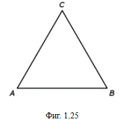
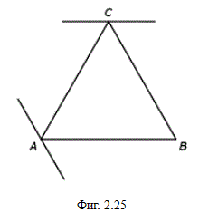
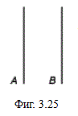

Беседа 2814 от 3877 · Беинса Дуно
Законът на музиката
Отче наш.
Имате ли зададена тема? – /Имаме./ – Четете! /Чете се темата „Функции на черния дроб“/ Контраст има. Щом има черен дроб, има и бял дроб. Пишете нещо за белия дроб!


Имаме тук в песента „Фир-фюр-фен“ започва с „ре“. От „ре“ започва. Ти не можеш да вземеш правилно „ре“, ако не си взел правилно „до“. Пилето не може да ходи докато не се измъти. Първото ограничение се разрешава с основния тон в природата. Основният тон е, който разрешава мъчнотиите. Ще излезеш от едно инертно състояние на неподвижност. Имаш желание да направиш нещо, но си инертен. Туй състояние, с което можеш да се освободиш, да излезеш от туй положение, вече вземаш основния тон „до“. След туй тебе в природата ти се дава „ре“. Вече /има/ един наклон. Най-първо човек започва живота си с инволюция. От „до“ ти вече ще имаш един наклон. Искаш не искаш, слизаш надолу. То е инволюция. Пилето щом излезе из яйцето, то слиза надолу. Тъй щото как ще се движиш, няма какво да се смущаваш, ще имаш достатъчно сила да слизаш, ще вземеш правилно „ре“. Тогава „ми“-то, как се е образувало? „Ми“-то вече е първата спирка, когато отново туй движение един малък завой е направило. То е вече „ми“. Второто положение, вие имате да вземете вече една успоредна линия, паралелно движение на „ре“, но в друга посока, обратна посока. Посоката, в която се движите от „до“ до „ре“ и от „ре“ до „ми“, са успоредни, но в противоположни посоки. Трептенията на тоновете не се движат в една и съща посока.
Да кажем, онова желание, което имаш да проточиш ръката си, ти искаш да хванеш един предмет, проточиш ръката си. Като хванеш предмета, ражда се в тебе противоположното желание – този предмет да го привлечеш към себе си. Каква е целта сега, че искаш да го привличаш? Най-първо ти искаш да вземеш един тон. Защо искате? Ами, че в дишането има пеене. Най-първо вие поемате въздуха, после правите обратното движение. Ако вие имате едно хубаво дишане, достатъчно е да си турите ухото на гърдите, за да знаете дали дишането е правилно. Когато дишането е правилно, има една музикалност в дробовете. Пък, ако не е нормално, имате едно хъркане в дробовете. Често лекарите като турят ухото, казват, че дробовете не функционират правилно. Ако дробовете функционират правилно, има музика, отлично е. Всяка една бронха в дробовете издава един тон хармоничен, не издават един и същи тон. Тия бронхи, които са в средата на дробовете, тия, които са горе и долу, различно пеят. Всички пеят, един чуден хор има. Онези, които дишат правилно, като турите ухото, ще чуете едно симфонично пеене. Акламират. Кой такт имате? – /2⁄4/ /Учителят тактува 2⁄4./
Често в музиката искат да пеят вярно, да може да хванеш една песен. Често много песни не са вярно нотирани. Онези, които ги пеят, не ги пеят правилно и онези, които са ги нотирали, не са ги нотирали правилно. Да допуснем сега, че вие нотирате „Изгрява слънцето“. Как ще го нотирате? Може да го пеете по много начини. Но има един начин, има една музикална линия, по която слънцето върви. Тя не е перпендикулярна, но тя е крива линия. Значи „Изгрява слънцето“, ще дадеш музикален подем отгоре надолу, не перпендикулярно, но една крива линия ще дадеш. Как ще го дадеш музикално? Как ще дадеш музикално кривата линия?

Имате противоречие в себе си, някой път скарали сте се със себе си, не искате да се подчините с нищо. Изходи туй разстояние! Ти като изходиш това разстояние ще кажеш: „Не съм прав“. Ти ще примириш една своя мисъл с едно чувство. Някой път една мисъл и едно чувство не могат да се примирят. Никога вие не може да примирите чувствата в A и B. Трябва да си гениален. Винаги ще се примириш в C. Само в C може да вземете правилно тона. Туй разстояние то е движение, то е „ре“. „До“ може да се примири. „До“ може да излезе из мъчнотията само, когато влезете в пътя на „ре“. „Ре“ може да постигне своята цел, само когато влезе в пътя на „ми“. „Ми“ може да постигне своята цел, само когато влезе в пътя на „фа“. „Фа“ може да постигне своята цел, само когато влезе в пътя на „сол“. „Сол“ може да постигне своята цел, само когато тръгне в пътя на „ла“. „Ла“ може да постигне своята цел, само когато влезе в пътя на „си“ и „си“ може да постигне своята цел, само когато влезе в пътя на горно „до“. Всички тонове са в зависимост. Всеки тон спомага за реализирането на предния. „Ре“ е път за „до“, за освобождение. А пък „ре“ се освобождава чрез „ми“. „Ми“ се освобождава чрез „фа“. „Фа“ се освобождава чрез „сол“. „Сол“ се освобождава чрез „ла“. Или „ре“ е възможност на „до“. Какво е възможността на „ми“? „Фа“ е възможността за „ми“. „Сол“ е възможност за „ла“, и „ла“ е възможност за „сол“. „До“ горно е възможност за „си“.
Та вие понякой път искате да пеете „до“. Тогава най-първо намерете възможността на „ре“. /Учителят взе цигулката си/. Представете си, че имаме няколко дисонанса, в които музиката не може да се прояви. Първият дисонанс е от тия корди. Тия материали не са хубави да образуват тоновете. Някой път самото дърво не е така акустично. Някой път в устройството на инструмента липсва нещо. Трябва една математическа точност в звуковите отражения. Пък някой път и самият цигулар, и той не е нагласен. „Ре“ показва, че баща му е малко сприхав. Вземете от „сол“ долно „до“! Сега да кажем, имате „ре“ във „Фир-фюр-фен“. Я я изпейте, тъй както я знаете. /Изпяхме я/. Като дойдете до основния тон – горно „до“, имате едно колебание. Казвате: „Въпрос е дали ще може да се освободим“. Понеже „до“ представя известно ограничение, вие се спъвате в „до“-то, имате съмнение, гласът ви трепери при „до“, съмнявате се, а музиката не търпи никакво съмнение. Всяко съмнение произвежда известна анормалност. /Учителят пее сам/. В пеенето трябва да влагате идеята, да вземате вярно. Вие се съмнявате дали ще го изпеете хубаво. Имаш съмнение. Щом чувствуваш добре, щом мислиш добре ще го изпееш добре. Щом не мислиш добре, щом не чувствуваш добре, не може да го изпееш. Трябва да мислиш добре. Тогава може да турим така: „Движа се ще цъфна“. /Учителят го пее/. Щом започнеш да се колебаеш, не можеш да вземеш „сол“ вярно – „Движа се ще цъфна“. Дали ще цъфнеш, ти се колебаеш. Може да го изпеете: „Движа се ще цъфна“.
Какво означава „фир-фюр-фен“? На български не може да се изрази. Ти имаш светлина, имаш най-лошите условия. Но тия условия, нещо разумно има в тях. Запример „фир-фюр-фен“ ето как се представя: Гледате грънчар, който си оцапал ръцете. Този човек взема таз кал, меси, меси, направи едно гърне. След време виждам извади един много хубав съд. Та „фир-фюр-фен“ значи, от тия условия, от тази кал, от тази материя, от условията, при които се намираш, има един грънчар, който от тебе ще извади най-хубавото гърне. Туй значи. Ще кажете: „Аз съм кал, от която Бог ще извади най-хубавото гърне. Аз съм кал, от която Бог ще извади най-хубавото гърне“. – За изяснение на „фир-фюр-фен“. Зависи не от калта. Тя сама по себе си нищо не може да направи, но от това разумното начало.
Сега когато вие пеете, най-първо считайте, че имате възможности. Вие казвате някой път: „Аз не мога да пея“. Значи другото разумно трябва да работи у тебе, не калта. Но от тази кал ти може да извадиш нещо. Този, който не пее, той не може да се научи да пее. Кои учат сега да пеят, които знаят или които не знаят? Ти на богатия човек нищо не може да му дадеш. Той е дошъл до крайния предел. Богатият човек е съвсем инертен. От богатия човек нищо не става. Този, богатия, човек, за да изкараш от него нещо, ти трябва да го направиш беден, да изгуби богатството, да има желание да придобие богатство. Тогава той ще може да пее. Богатият, за да го накараш да пее, вземи му парите. Дотогава седи. Като си изгуби парите казва: /Учителят го пее/ „Изгубих си парите“. Първата песен съчинява. А пък онзи казва: /Учителят пее/ „Спечелих богатство“. И двамата пеят; единият, който изгуби и другият, който печели. Има един начин за пеене, то е учение. Учиш да пееш, защото самата музика, то е велико благо. Музиката е велико благо, което слиза от Бога в човешката душа. Трябва да пееш! Само чрез музиката можеш да приемеш пълното благо Божие. Божиите блага идат чрез музиката. Ти като пееш, Божието благословение в тебе ще дойде. Ти ще се почувствуваш радостен и весел. Ако не си музикален, Божието благо не може да дойде. Ако ти си зле настроен, не искаш да пееш, не може да дойде Божието благословение. Не в пеенето, но в разположението да пееш, ще дойде Божието благословение. То е процес. Музиката има външна и вътрешна страна. Чрез външната и вътрешната страна на музиката иде Божието благословение, иде в душата. Туй е правилното. Вие трябва да имате един стимул, пеенето, за да възприемете Божието благословение. Външно и вътрешно да пеете. Тогава за да може да пеете трябва да мислите добре, да чувствувате добре, трябва да постъпвате добре. Щом добре мислите, щом добре чувствувате и щом добре постъпвате, ще пеете добре и Божието благословение ще дойде.
Тогава, ако дойдете до „Тао би“ – „Тао“ е благословението. В „тао“ очакваш благословението, ти се подготвяш, за да влезе туй благословение в тебе. За да влезе благословението трябва да съзнаваш. Щом съзнанието се отвори, тогава веднага ни става ясно, започва да ни се открива. Щом си отвориш очите, виждаш. „Аумен“ означава това, което си придобил, приел. След като си ял храната, усещаш в себе си нещо приятно. „Аумен“ е храната. Чувствуваш се много добре и казваш: „Много ми е приятно, че възприех тази храна, или много ми е приятно, че четох тази книга“. Възприемаш тези мисли, усещаш благото. „Тао“ означава туй, което съдържа хлябът в тебе – Божието благословение. А пък „аумен“ значи това, което влиза в тебе. Калта, която е у тебе разработвай я на хубави грънци. Условията, които са около тебе използувай ги! Благото, което влиза в тебе, радвай му се! Преводи ви правя сега. Сега тази песен трябва да я пеете хубаво. Какво е „фир-фюр-фен“? – Калта в грънци да я направите. Като кажеш „фир-фюр-фен“ лошото, което е в тебе трябва да се опече. Печенето как става? Как се печат? Трябва да дойде законът на любовта да работи. Самото горение, в огъня, който гори, има музика. Слушали ли сте огънят как пее? Слушали ли сте кога се пекат грънци? Огънят казва: /Учителят пее/ „Добри грънци ще излязат от вас, добри грънци ще излязат от вас“. Вие се мъчите, това е пещта, в която се пекат вашите грънци. Казвате: „Защо е туй мъчение?“ – Ако не се печеш, нищо не може да излезе от тебе. Ако тази кал не се пече, нищо не може да излезе от нея. Това е един необходим закон. Туй е един разумен закон. Ако минеш по този път, човек ще станеш. Ако не минеш по този път, глупав ще останеш. Ако минеш през пещта, умен ще станеш. Кое е по-хубаво? – По хубаво е през пещта да минеш. По-хубаво е да послушаш песента на огъня. Защото, като ти попее огънят е хубаво. Другите не пеят. Огънят ще ти попее, ще те насърчи. Ако го обичаш той няма да те изгори. Изгарят тия неща, които не обичат огъня. Онези, които обичат огъня, той на тях им донася благо.
Та казвам: В музиката, ако пеете хубаво, тя ще ви донесе Божието благо. Казваш: „Това ми останало, да пея!“ Без пеене, нищо не може да се постигне. С музиката може да постигнеш много работи. Единственият правилен път за постижение на Божието благо, то е музиката, вътрешната и външна музика. Музиката отваря един път, едно разположение в човека, за да възприеме Божието благословение.
Хубаво, сега защо са турени осминки с точка, има шестнайстинки, имате бемоли, повторение? Защо едното „ре“ е осминка, другото е осминка с точка, другите са шестнайстинки? – В дадения случай, времето се съкратява понеже, „сол“ е за цел. Тия са разумни същества, не искат да останат дълго време, но колкото се може по-скоро да дойдат до „сол“. Имате три осминки, три точки. Имате една шестнайстинка. Времето се скъсява.
Всякога, когато едно желание е интензивно, то скъсява времето. При интензивните желания времето се скъсява. При хубавите изгледи времето се продължава. В музиката някои неща са продължени, приятни са, някои се скъсяват. Има второстепенни, третостепенни, четвъртостепенни неща, които бързо се минават. Тия работи, които в музиката се вземат набързо, те са украшения. „Фир-фюр-фен“ – ти тръгваш. Второто положение – „тао“ като вземеш, слизаш, не се отива нагоре, но слизате надолу. Горе имате „ла“, после „сол“. Пак се слиза при „сол“. Имате „си“, вие сте на края. Започвате от „ре“ и пак пристигате на „ре“. Но при второто „ре“ имате дълга почивка. Ако сега вие измените този ред на нещата, ще измените съвсем вътрешното си състояние. Ако измените този ред, музикалния ред ще измените. Ако пеете по друг начин, ще измените съвсем реда на нещата. Този е най-късият път за постижение. Всички други пътища са по-далечни.
Най-късото разстояние между две точки е правата линия. Всички други линии са по-дълги от правата. Следователно, за предпочитане е правия път понеже спестяваме време и разходи. Правата линия носи най-хубавите постижения. Кривата линия нищо не носи освен опита на много прави линии за постигането на целта. Кривата линия е опит на много прави линии за постижение, за постижението на една цел. – Я изпейте сега „Фир-фюр-фен“!
Сега ви давам за цяла една седмица да пеете „фир-фюр-фен“, да го пеете и като го пеете, вие да сте доволни от себе си. Благословението после ще дойде. „Фир-фюр-фен тао би аумен“ – Калта на грънци трябва да се превърне. То е хубавото. Всички божиите благословения трябва да ги приемете. Да бъдем радостни, това значи калта да се опече, условията да се използуват и благото Божие да го получим. Туй значи „Фир-фюр-фен, Тао Би Аумен“. Трябва да пееш, за да почувствуваш, че калта е опечена, условията са използувани, благото е почувствувано.
На малките деца им дават по-малко. Трябва да се научите малко гладни да оставате. Всички вие искате да достигнете крайните предели на живота. Щом се достигне до крайния предел на живота, смъртта е неизбежна. Никога не искайте да достигнете крайната цел на живота. Избягвайте крайните цели на живота. Смъртта е крайната цел на живота. Крайната цел на живота е смъртта. Една смяна е крайната цел. Целта на смъртта е живот да дадеш. Ако всички сме разумни, тя сама има интерес да даде живот, че да има кого да мори. Смъртта, в неин интерес е, да даде подтик на живота, да има кого да мори, че работа си създава. Крайната цел на живота е смъртта, той иска да ограничи малко човека. Та казвам: Не търсете крайната цел на живота! Крайната цел на живота е смъртта. Като дойдете до смъртта мислите, каква е крайната цел. Но кажете, веднага турете мисълта, че крайната цел на смъртта е живота. Съедини ги и смъртта, и живота да дадат тон. Ако пееш ти няма да умреш. Като дойдеш до смъртта, ако пееш, няма да умреш. Минаваш по един начин. Защото, като дойде смъртта, ако пееш няма да умреш. Смъртта, която иска да те умори, казва: „Нека да живее, за да го моря пак“. Или вие имате съвсем друго разбиране за смъртта. Не, смъртта е много приятна. Нали сте виждали децата, когато намерят някой хубав плод, някоя ябълка или круша, децата обичат да я пипат. Като погледнеш, гледат наоколо, искат да вземат тази ябълка. Някой път само пипат и им е приятно. Смъртта само като пипне някого, не да го умори, уморяване може само като го откъсне. Някой път само да го пипне. Казва: „Да го пипна веднъж“. Желание има в смъртта да ги пипне. И смъртта от обич ви пипа. Някой път толкоз ви обикне, че може да ви откъсне. Ако вие запеете, казва: „Сега може да живееш, че втори път да го пипна“. Когато човек пее, мисли че е постигнал крайната цел. Човек като върви да знае, че не е постигнал крайната цел.
Само светлият път на Мъдростта води към Истината!
В Истината е скрит животът!
ХVII година
25 лекция на Младежкия окултен клас
държана от Учителя на 25. III. 1938 г., петък, 5 ч.с.
София – Изгрев.